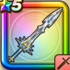

はぐれメタルの剣【錬】
攻略班 7.0点 / ホイミザオマホトーンザオラル【錬】ベホマラー【錬】
くわしい特徴
【レベル別習得スキル】 物理型呪文型補助型 Lv1スキルの斬撃・体技ダメージ+10% Lv1回転斬り（消費MP：12）敵全体に威力120%の斬撃ダメージを与える Lv1メタルはやぶさ斬り（消費MP：17）メタル系にダメージを与え、それ以外には150%ダメージを与える斬撃攻撃を2回する Lv1閃烈回転斬り（消費MP：26）敵全体に160％のギラ属性斬撃ダメージを与える Lv1ミラクルソード（消費MP：13）敵1体に200％の無属性斬撃ダメージを与え、与えたダメージの20％を自身のHPとして回復する。 Lv1(ランダム)ギガスラッシュ（消費MP：23）敵全体に230%のデイン属性斬撃ダメージを与える Lv1(ランダム)ジゴスパーク【錬】（消費MP：56）敵全体に威力440%の敵ごとに有効なデイン属性もしくはドルマ属性の斬撃ダメージを与える Lv1(ランダム)シャイニングボウ【錬】（消費MP：41）敵全体に270%のイオ属性体技ダメージと2回ランダムな敵に50%のイオ属性体技ダメージを与える。さらに仲間全員のHPを少し回復する※ギガスラッシュ/ジゴスパーク【錬】/シャイニングボウ【錬】はランダムでどれか1つがスキルとして付与されます。 Lv1じゅもんダメージ+10% Lv1バギ（消費MP：10）小さな竜巻で敵全体にバギ属性の呪文微小ダメージを与える Lv1バギマ（消費MP：15）はげしい竜巻で敵全体にバギ属性の呪文小ダメージを与える Lv1ライデイン（消費MP：20）敵1体にデイン属性呪文特大ダメージを与える Lv1バギクロス（消費MP：21）敵全体にバギ属性の呪文中ダメージを与える Lv1ギガデイン（消費MP：44）敵全体にデイン属性の呪文特大ダメージを与える Lv1スキルHP回復効果+5% Lv1ホイミ（消費MP：5）仲間ひとりのHPを回復する Lv1ザオ（消費MP：15）仲間ひとりをHP25%で復活させる Lv1マホトーン（消費MP：21）敵全体の呪文を封じる Lv1ザオラル【錬】（消費MP：25）仲間ひとりをたまにHP50%で復活させる(戦闘中1回のみ使用可能) Lv1ベホマラー【錬】（消費MP：47）呪文で仲間全員のHPを回復する 【限界突破スキル】 1凸- 2凸- 3凸- 4凸-